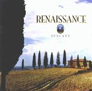

| Artist: | Renaissance |
| Title: | Tuscany |
| Label: | Giant Electric Pea GEP CD 1030 |
| Length(s): | 49 minutes |
| Year(s) of release: | 2001 |
| Month of review: | [02/2002] |
| 1) | Lady From Tuscany | 6.40 |
| 2) | Pearls Of Wisdom | 4.25 |
| 3) | Eva's Pond | 3.40 |
| 4) | Dear Landseer | 5.19 |
| 5) | In The Sunshine | 4.25 |
| 6) | In My Life | 5.26 |
| 7) | The Race | 4.58 |
| 8) | Dolphins Prayer | 3.19 |
| 9) | Life In Brazil | 3.40 |
| 10) | One Thousand Roses | 7.12 |
Pearls Of Wisdom opens with melodious piano, a bit New Agey perhaps even. Later acoustic guitar sets in, and the music gets a bit of an orchestral feel for which Simmonds is responsible. Renaissance might be a good idea for a Night Of The Proms session. The music continues to have a certain moodiness.
Eva's Pond is a sombre piece or is it maybe just peaceful? It is definitely a hazy song, with the vocals of Haslam ringing out clearly. The music is quite romantic and melodious, but it is also beautiful. It is maybe all a bit too friendly.
Acoustic guitar opens the bouncy Dear Landseer. Later the drums sound even a bit jazzy and some harpsichord gets thrown in. For the rest, it is simply a more up-beat version of the previous tracks. The vocal melodies are accessible, but contain enough appeal to avoid triteness (but I recognize that on this I may heartily disagree with some). The song exudes a feeling of happiness.
In The Sunshine continues the accessible mellow line of the album. For my tastes it is a bit too mellow. In My Life opens with piano again and continues with easily strumming acoustic guitars. A very lazy tune where I have to stifle a yawn.
The Race opens with eerie keyboards and a strong bass presence. Hey, in fact this song is rather up-beat. There is definitely a sense of urgency to this song. I am not that happy with the chorus. The pounding of the intermezzo with its swirling piano and keyboards combined with the clear vocals of Halsam (in a way I am reminded of Pallas' Ratrace here. Weird.) is better.
Dolphins Prayer and Life In Brazil are rather short songs. The former of these is a stately lament with doubled vocals. Some of these vocals are extremely high (but always clear). In addition onnly little is evident, only a bit of keyboards here. Life In Brazil is a more merry tune, strongly Latin in fact.
The closer is One Thousand Roses, it is also the longest song on the album. The opening of this song reminds me very much of Don't Cry For Me Argentina. Later the song becomes more up-beat with an optimistic synth solo no less.